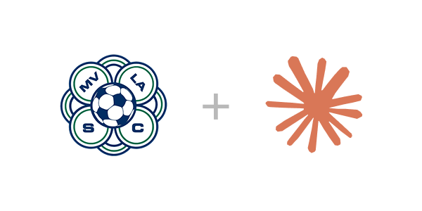

A Claude-powered scheduling tool for MVLA team managers.
To get started, paste the following prompt into a new Claude conversation and Claude will walk you through the process step by step:
I want to set up the MVLA Scheduling Assistant. Please use the setup instructions from this URL and follow them to get started:
https://mvla.ericgio.com/public/files/SETUP.md
The tool is a Claude.ai Project — a persistent chat context that gives Claude access to your team's season info and a set of tools for fetching live data. When you ask it to schedule a game, it:
No code to run. No spreadsheets. Just a conversation.
Once set up, start a chat inside your project and ask naturally: